#install.packages("pacman")
pacman::p_load("tidyverse", "tsibble", "bfast", "data.table", "mgcv","forecast", "zoo", "anytime", "fabletools", "signal", "fable", "tibble")Environmental analysis using satellite image time series in R
Part 1: Pre-processing and smoothing satellite image time series
Loading and pre-processing data
Load the packages:
Import data - raw MTCI values from Sentinel-2 acquired from GEE:
df = read.csv("species_mtci.csv")
str(df)'data.frame': 1446996 obs. of 3 variables:
$ system.index: chr "20170329T095021_20170329T095024_T33UXR_00000000000000000042" "20170329T095021_20170329T095024_T33UXR_00000000000000000043" "20170329T095021_20170329T095024_T33UXR_00000000000000000044" "20170329T095021_20170329T095024_T33UXR_00000000000000000045" ...
$ MTCI : num NA NA NA NA NA NA NA NA NA NA ...
$ species_cd : chr "GB" "GB" "GB" "GB" ...summary(df) system.index MTCI species_cd
Length:1446996 Min. :-8.2 Length:1446996
Class :character 1st Qu.: 1.3 Class :character
Mode :character Median : 3.1 Mode :character
Mean : 3.0
3rd Qu.: 4.4
Max. :17.8
NA's :1430563 As you can see, there is a lot of NA values, also, if we plot index values there are a lot of outliers.
plot(df$MTCI)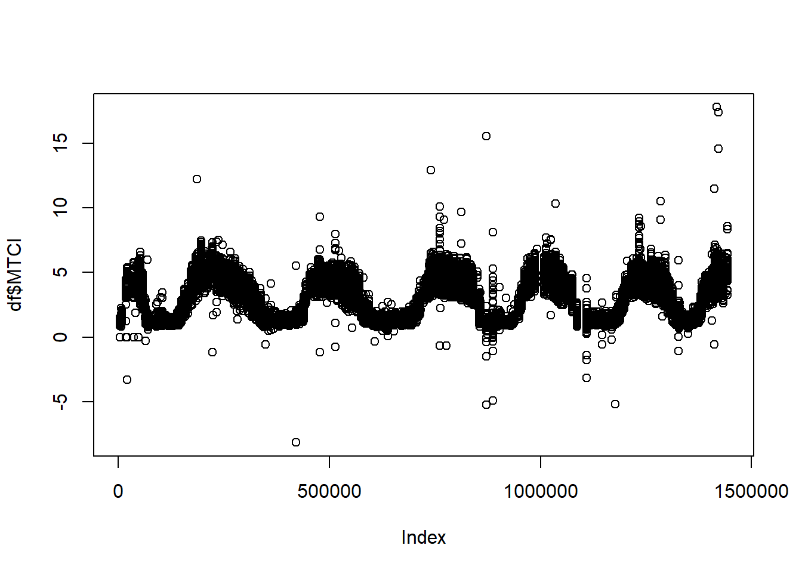
Modify column with date and change columns names:
df$system.index = as.Date(df$system.index, format = "%Y%m%d")
names(df) = c("date", "index", "type")Filtering values, removing NA, mean of duplicates:
df_clean = df %>%
drop_na() %>%
group_by(date, type) %>%
summarise(index = mean(index)) %>%
ungroup() %>%
dplyr::filter(index < 7 & index > 0 & date > "2018-03-05")
ggplot(df_clean, aes(date, index, color = type))+
geom_point()+
theme_light()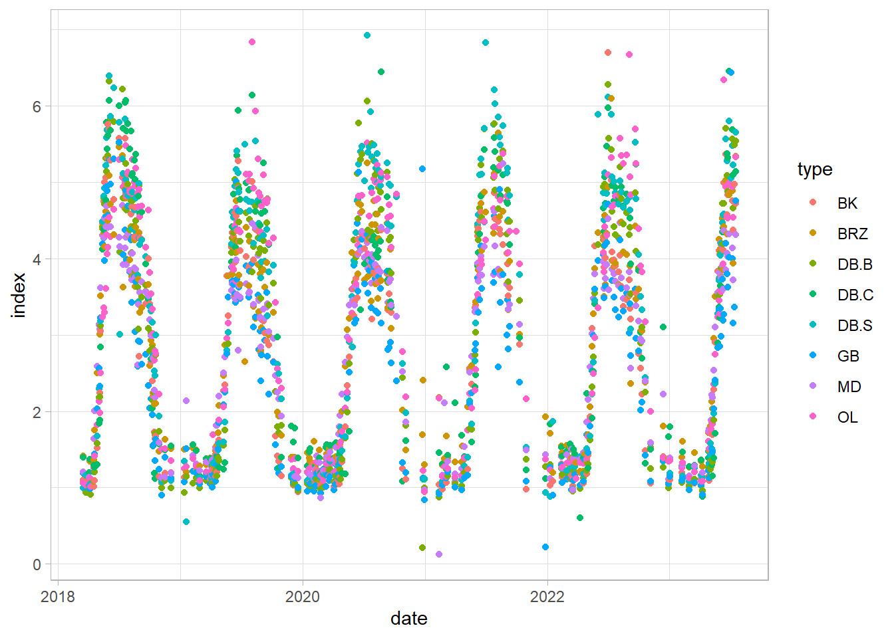
Example analysis on hornbeam (GB) time series
df_gb = df_clean %>%
dplyr::filter(type == "GB")
ggplot(df_gb, aes(date, index))+
geom_line(color = "darkgreen", linewidth = 1)+
theme_light()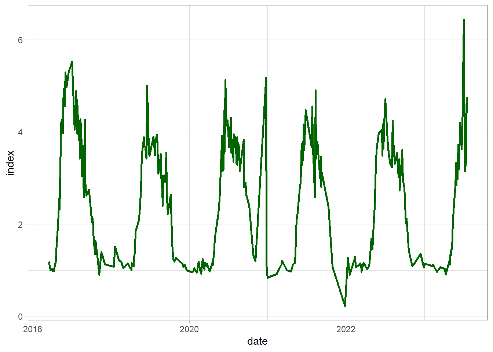
Firstly, identify and replace outliers using simple linear interpolation:
df_gb$index_out = df_gb$index %>%
tsclean()
ggplot(df_gb)+
geom_point(aes(date, index), color = "red")+
geom_point(aes(date, index_out), color = "darkgreen")+
theme_light()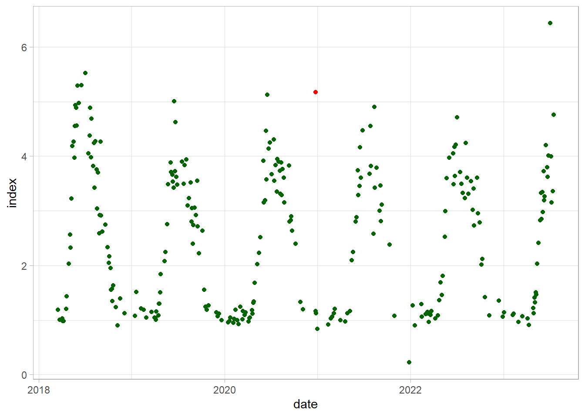
Smoothing 1: Simple Moving Average
df_gb$avg3 = rollmean(df_gb$index_out ,3, fill = NA)
df_gb$avg10 = rollmean(df_gb$index_out ,10, fill = NA)
ggplot(df_gb)+
geom_line(aes(date, index_out))+
geom_line(aes(date, avg3), color = "blue", linewidth = 1.0)+
geom_line(aes(date, avg10), color = "red", linewidth = 1.0)+
theme_light()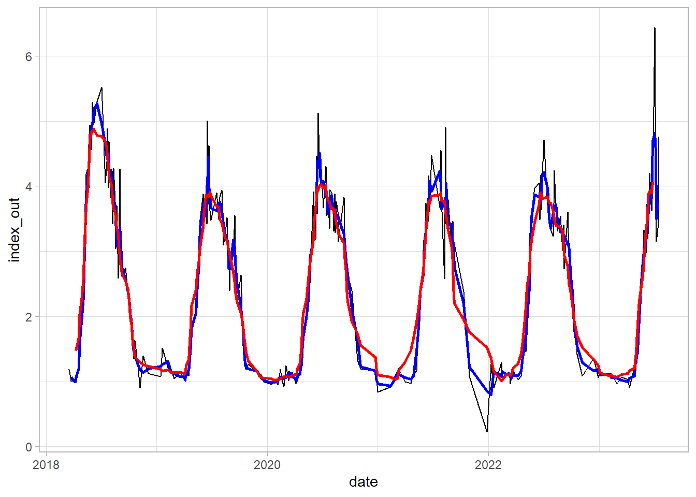
Smoothing 2: Savitzky-Golay smoothing
We need to create regular (1-day) time series with NA for missing values. And then interpolate the unknown values using na.approx() from the zoo package:
df_tsb = tsibble(df_gb[,c(1,4)], index = date, regular = TRUE) %>%
fill_gaps() %>%
mutate(approx = na.approx(index_out))Apply Savitzky-Golay filter. n is a filter length (odd number) - test different values.
df_tsb$sg = df_tsb$approx %>%
sgolayfilt(n = 71) Analyze the results on plot - line represent time series smoothed by S-G, red dots - original values and blue dots - interpolated values
ggplot(df_tsb)+
geom_point(aes(date, approx), color = "blue", alpha = 0.2)+
geom_point(aes(date, index_out), color = "red", alpha = 0.7)+
geom_line(aes(date, sg), size = 1.1)+
theme_light()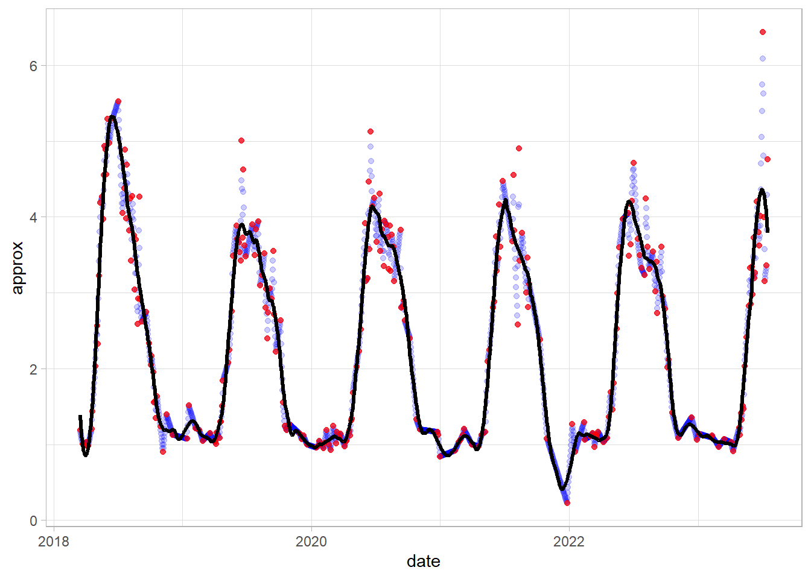
Smoothing 3: Generalized Additive Models (GAM) fitting
The first step is the same as in Savitzky-Golay - we will create regular time series with NA values:
df_tsb_gam = tsibble(df_gb[,c(1,4)], index = date, regular = TRUE) %>%
fill_gaps() %>%
ts() %>% #but here also we need to change date format from y-m-d to numeric (unix time)
as.data.frame()But now we can go straight to modelling without dealing with missing values!
GAM modelling with dates as predictor (Generalized Additive Mixed Models):
model = gamm(df_tsb_gam$index_out ~ s(date, k = 60),
data = df_tsb_gam , method = "REML")Predicting values using GAM model and plotting the results:
df_tsb_gam$predicted = predict.gam(model$gam, df_tsb_gam)
df_tsb_gam$date = anydate(df_tsb_gam$date)
ggplot(df_tsb_gam)+
geom_point(aes(date, index_out), color = "red", alpha = 0.4)+
geom_line(aes(date, predicted), linewidth = 1)+
theme_light()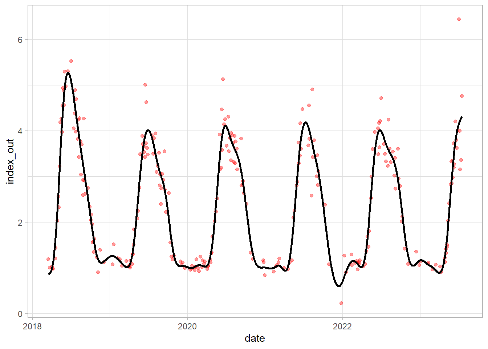
Compare S-G (blue line) and GAM (black line):
df_tsb_gam$sg = df_tsb$sg
ggplot(df_tsb_gam)+
geom_point(aes(date, index_out), color = "red", alpha = 0.4)+
geom_line(aes(date, predicted), alpha = 0.8, linewidth = 1)+
geom_line(aes(date, sg), color = "blue", alpha = 0.8, linewidth = 1)+
theme_light()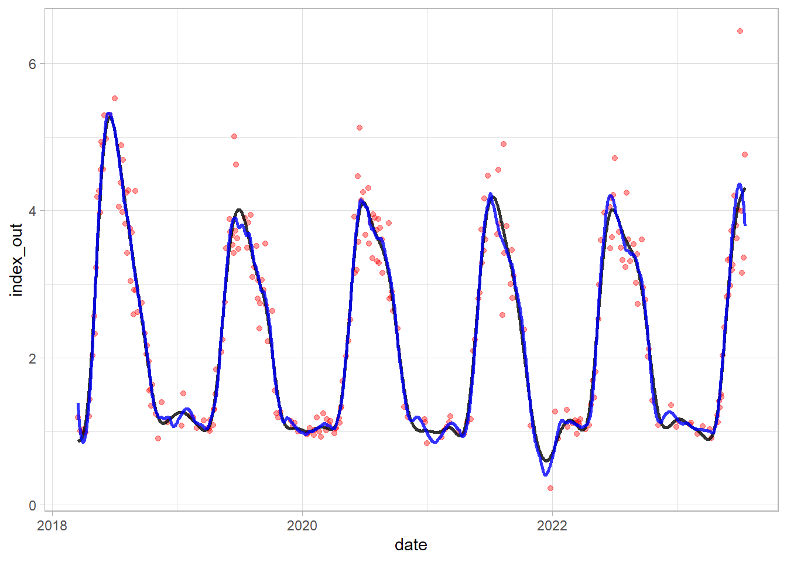
Excercise 1
Read landsat_ndvi_veg_2.csv file and analyze the dataframe. Based on preliminary analysis, select one vegetation type, use cleaning/outlier removing if necessary, and perform one selected method smoothing/fitting. Finally, visualize the results and evaluate its performance! Pay attention to:
- correctly convert system.index variable to date format (use e.g. substr() function)
- defining correct min and max values
- pay attention to the date range
- when using moving average and SG - set appropriate window size (n)
Part 2: Detecting trends and breaks
In this part we will use Savitzky-Golay smoothing and then try to detect breaks and trends in satellite time series for the part of Poznań
Checking and smoothing selected pixels (samples)
Load the data (already pre-processed:)
df = read.csv("poznan_ndvi_clean.csv")
str(df)'data.frame': 398387 obs. of 4 variables:
$ X : int 1 2 3 4 5 6 7 8 9 10 ...
$ system.index: chr "2018-04-06" "2018-04-06" "2018-04-06" "2018-04-06" ...
$ pointid : int 1 2 3 4 5 6 7 8 9 10 ...
$ index : num 0.395 0.365 0.427 0.405 0.454 ...summary(df) X system.index pointid index
Min. : 1 Length:398387 Min. : 1.0 Min. :-0.2184
1st Qu.: 99598 Class :character 1st Qu.: 450.0 1st Qu.: 0.2277
Median :199194 Mode :character Median : 900.0 Median : 0.4004
Mean :199194 Mean : 903.1 Mean : 0.4344
3rd Qu.:298791 3rd Qu.:1357.0 3rd Qu.: 0.6487
Max. :398387 Max. :1813.0 Max. : 0.9997 df = df[,-1]
df$system.index = as.Date(df$system.index, format = "%Y-%m-%d")
names(df) = c("date", "pointid", "index")
ggplot(sample_n(df, 5000), aes(date, index))+
geom_point(alpha = 0.5)+
theme_light()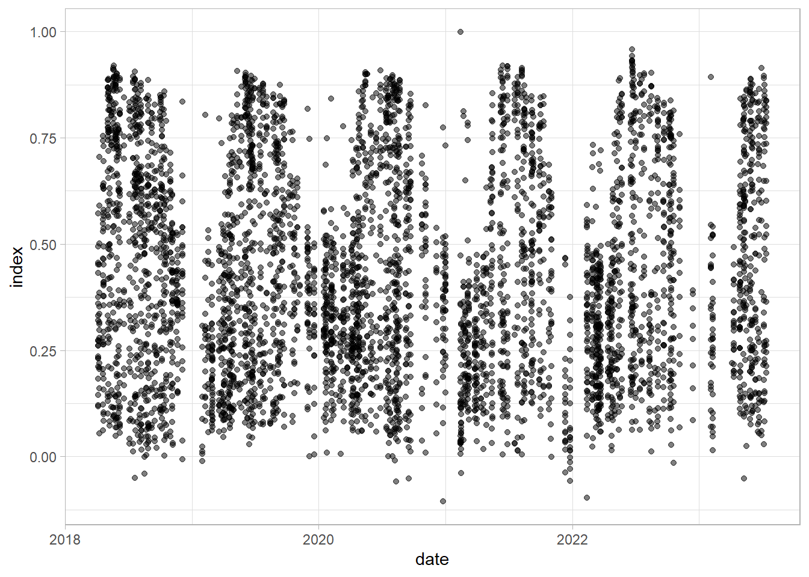
Check examples examples with pointid 551 - vegetation development; 1311 and 472 - new built-up; 1623 conifer trees; 1149 built up to green space
df_sel = df %>%
dplyr::filter(pointid %in% c(472, 551,1149,1311, 1623))
ggplot(df_sel, aes(date, index,
group = pointid, color = as.factor(pointid)))+
geom_line(linewidth = 1, alpha = 0.6)+
scale_color_manual(values = c("#FF6666", "green", "purple", "#FF9900", "darkgreen"))+
theme_light()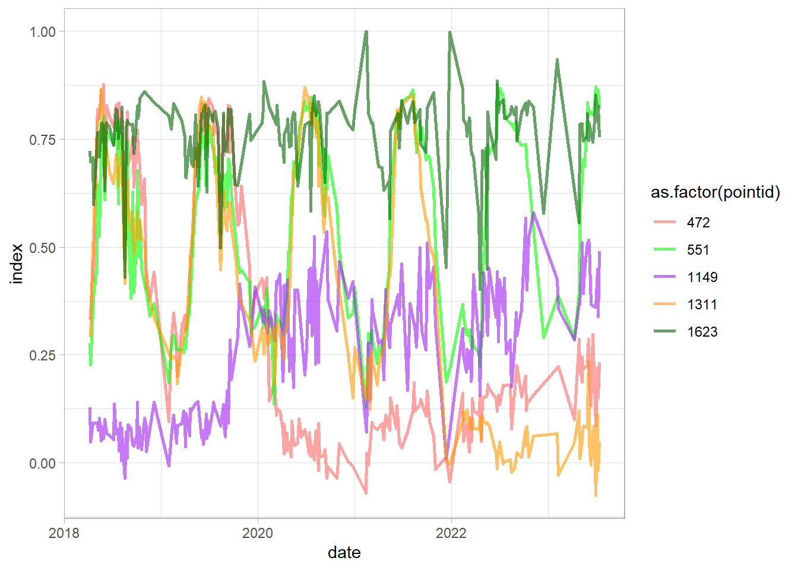
Let’s now check the just the place with vegetation development and than smooth the time series:
df_sel = df %>%
dplyr::filter(pointid %in% c(551))
ggplot(df_sel, aes(date, index,
group = pointid, color = as.factor(pointid)))+
geom_line(linewidth = 1)+
theme_light()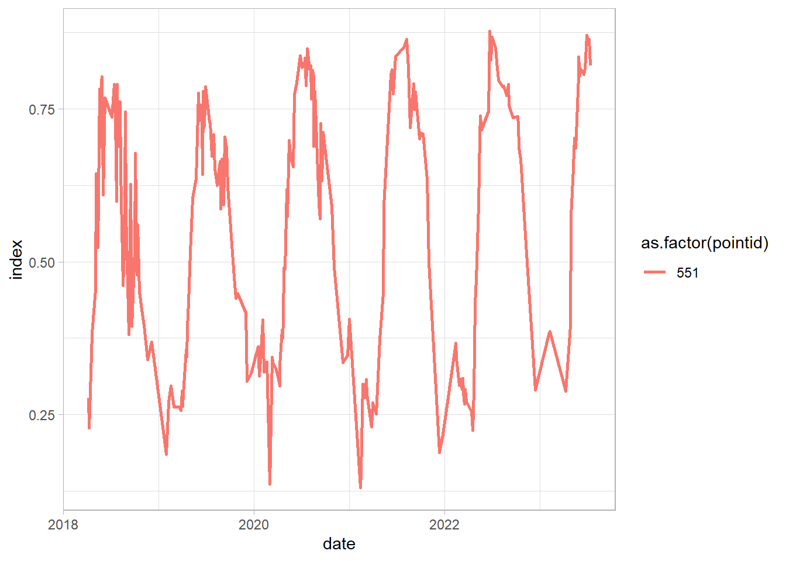
Based on previous part, we will use Savitzky-Golay smoothing - to make it easier you can find the function with all necessary steps (e.g. producing regular time series) and applying S-G function. The input for this is id (pointid in our loaded dataframe) and input_df, with 3 variables: date, id, and index value.
sg = function(id, input_df) {
df_sel = input_df %>%
dplyr::filter(pointid == id)
df_tsb = tsibble(df_sel[,c(1,3)], index = date, regular = TRUE) %>%
fill_gaps() %>%
mutate(approx = na.approx(index))
df_tsb$sg = df_tsb$approx %>%
sgolayfilt(n = 91)
df_tsb$id = id
return(df_tsb[,-2])
}
sg(551, df) %>%
ggplot()+
geom_line(aes(date, sg),
alpha = 0.8, linewidth = 1)+
theme_light()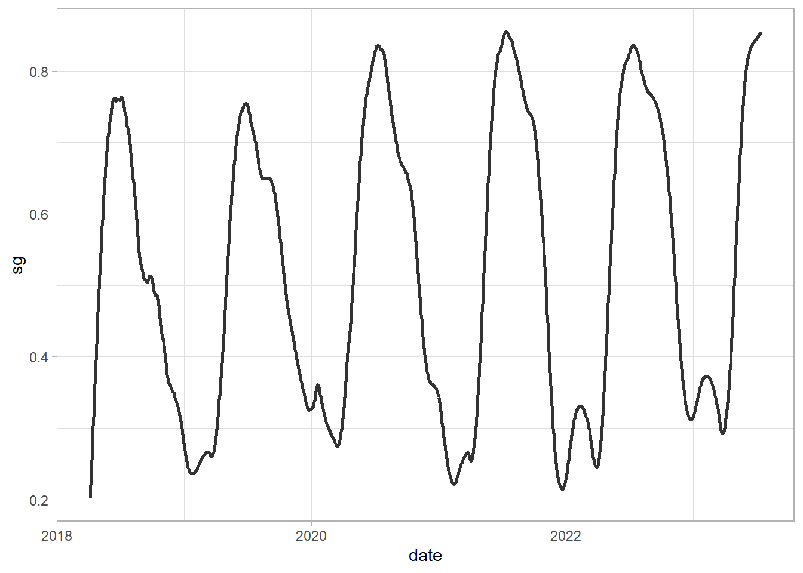
Time series decomposition
First example - vegetation development again:
df_sg = sg(551, df)
df_sg_ts = df_sg[,c(1,3)] %>%
ts(frequency = 365)
df_sg_ts[,2] %>% decompose() %>%
plot()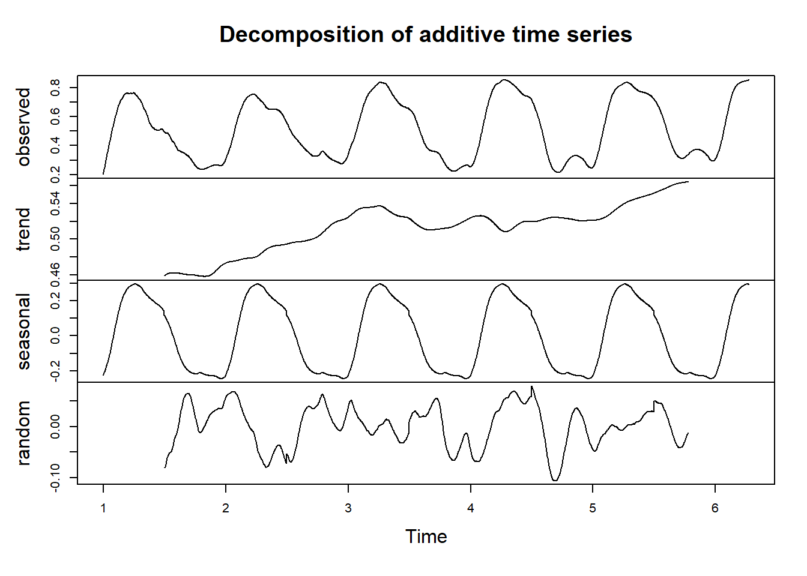
Second example - new built up area in the vegetated land:
df_sg = sg(1068, df)
df_sg_ts = df_sg[,c(1,3)] %>%
ts(frequency = 365)
df_sg_ts[,2] %>% decompose() %>%
plot()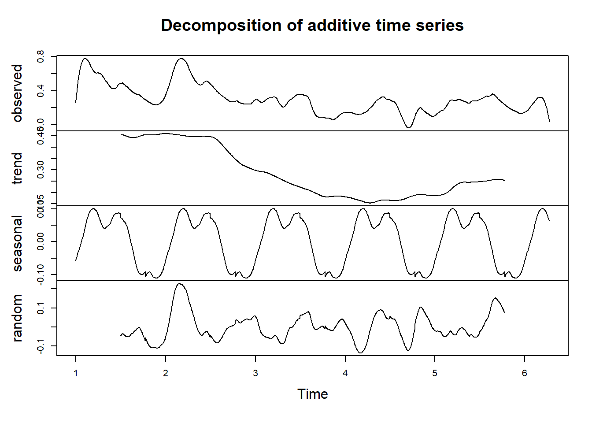
Different method - stl: Seasonal Decomposition of Time Series by Loess:
df_sg_ts[,2] %>%
stl(s.window = 7) %>%
plot()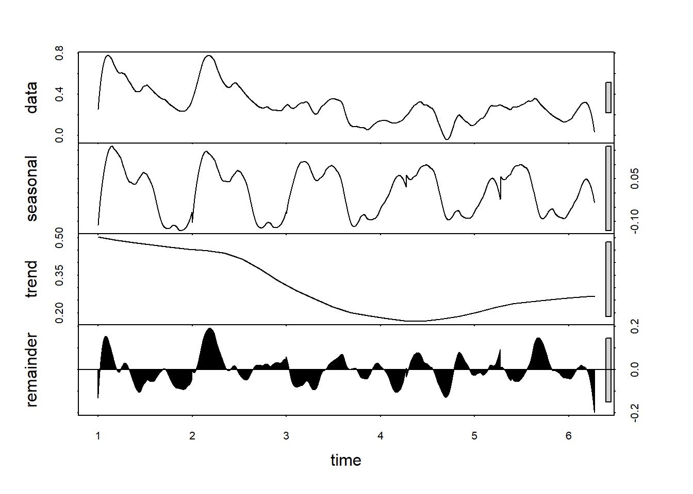
Detecting breaks
Detect breaks using bfast function - firstly, apply S-G smoothing (the data should be a regular ts() object without NAs). This is the example for pixel no 1311.
change1 = sg(1311, df) %>%
select(date, sg) %>%
ts(frequency = 365)Use bfast function - which is an iterative break detection in seasonal and trend component of a time series; plot the results and the detected break date:
fit = bfast(change1[,2], season = "harmonic", max.iter = 1, breaks = 1)
plot(fit)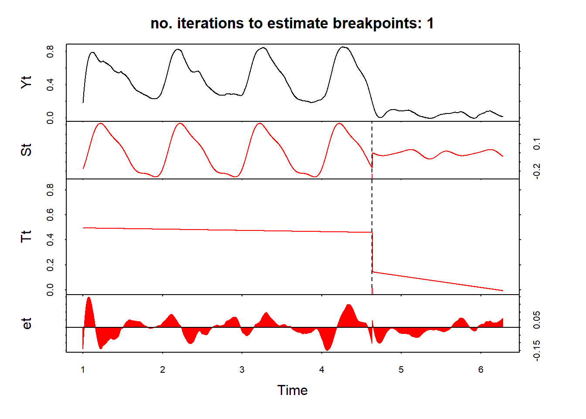
anydate(change1[1] + fit$Time)[1] "2021-11-23"And another example
change1 = sg(472, df) %>%
select(date, sg) %>%
ts(frequency = 365)
fit = bfast(change1[,2], season = "harmonic", max.iter = 1, breaks = 1)
plot(fit)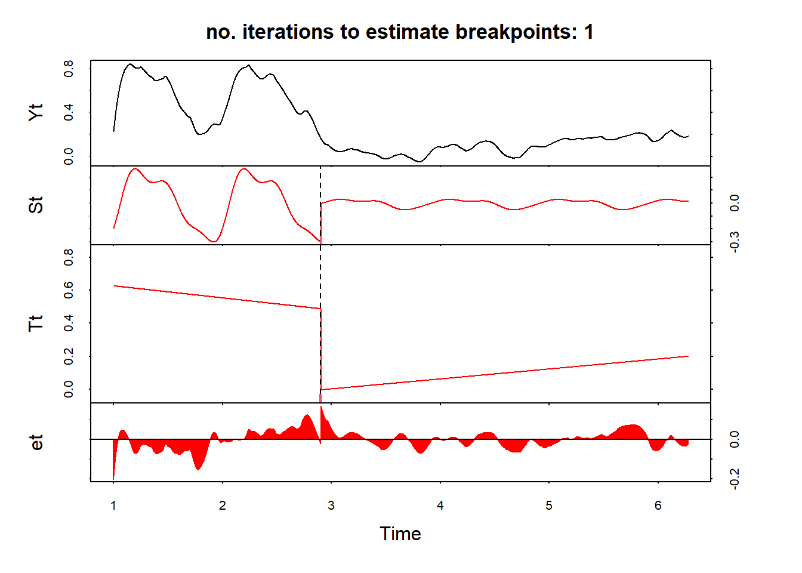
anydate(change1[1] + fit$Time)[1] "2020-03-01"Another useful function is bfast01 which checks for one major break in the time series
fit = bfast01(change1[,2])
plot(fit)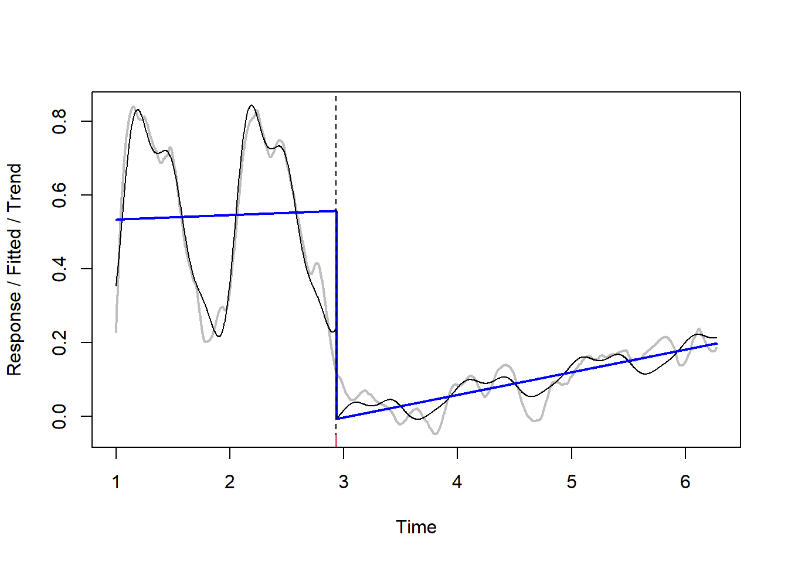
Then these results can be, for example, joined with spatial data - and we can produce map of new built-up areas, like in the example below.

Still, method is not perfect, you can try testing other parameters! :)
Excercise 2
Use landsat_ndvi_veg_2.csv dataframe again and decompose the time series for selected vegetation type!